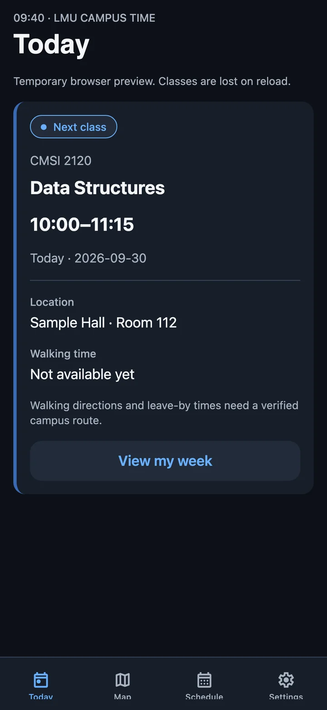
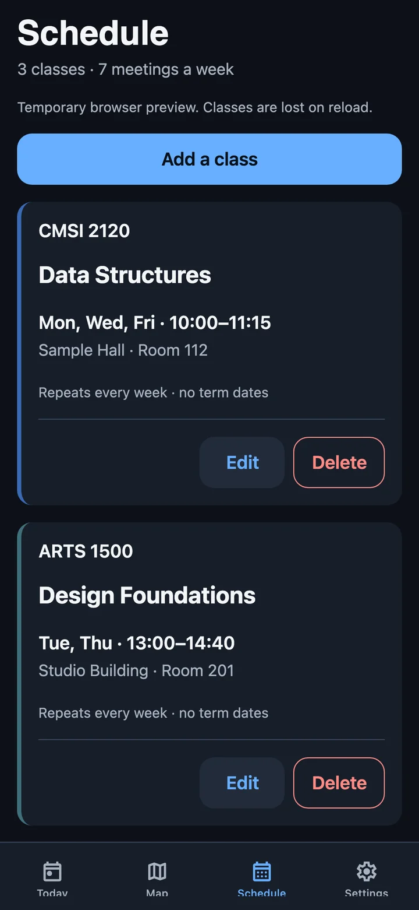

ClassPath
What class is next, and when do I need to leave?
- Role
- Solo: product, design direction, code
- Platform
- iOS and Android via Expo, plus web
- Status
- In progress · routing next
- Built with
- Expo, React Native, TypeScript, SQLite


The problem
A new campus means constantly checking your schedule, then a map, then doing the math on whether you'll make it.
ClassPath puts the answer on one screen: the class you're in now or the one coming up, where it is, and when to leave for it.
What I built
- A schedule that stays on the phone. Classes, meeting patterns and term dates are stored locally in SQLite, with no account. Every write goes through a single connection queue, so a quick edit can never race a save.
- A class editor that's hard to get wrong. It validates times, supports several meeting patterns per class, and uses explicit confirmation screens rather than system alerts, which do nothing on the web.
- A routing engine. Campus paths compile into an immutable graph, and A* search runs on it with costs taken from the real geometry. Leave-by times come from pure functions, so they're easy to test.
- Campus data you can trust. Campus data arrives as packs, and a pack only activates if its SHA-256 hash matches an approved list. Until a reviewed LMU pack exists, the app says walking time isn't available instead of guessing.
The design rules
I wrote a design contract before building any screens. Blue means you can tap it, green means verified, amber means timing risk and red means destructive, and no color means anything else. A course's color is a thin rail on the card edge, never a decorative swatch. Status is never shown by color alone. The contract also rules out gradients, glass effects, decorative charts, emoji icons and made-up campus content.
The honest empty states are deliberate. "Not available yet" is better than a confident wrong number when you're trying to get to an exam.
Next
Connecting the routing engine to real buildings, walking directions on the Map screen, and a reviewed LMU campus pack. The codebase currently passes 375 automated tests.